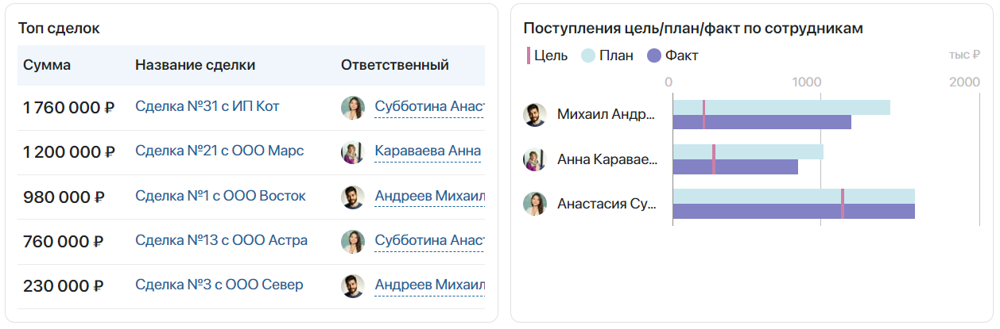

На странице Дэшборд руководителя отдела продаж отображаются отчёты, которые позволяют коммерческому директору и руководителям анализировать работу менеджеров и групп продаж с лидами и сделками.
начало внимание
Страница с дэшбордом доступна при активации одного из платных решений CRM, включающего формирование отчётов. Работать с ней смогут только пользователи, у которых есть лицензия такого решения.
конец внимание
Отчёты на странице строятся по данным из приложений Лиды, Сделки, Цели продаж и Реестр поступлений. Руководители отделов продаж смогут посмотреть следующие данные на графиках и в списках:
- Распределение Лидов / Сделок по сотрудникам — количество лидов и сделок в каждом статусе из всех созданных воронок, назначенных на определённых пользователей;
- Воронка продаж – Лиды / Сделки — динамика перехода лидов и сделок в каждый из статусов воронки в процентах;
- Топ сделок — пять самых прибыльных сделок в работе;
- Поступления цель/план/факт по сотрудникам — текущее выполнение целей продаж и суммы запланированных и фактических поступлений по сотрудникам.
Настройка страницы
За отображение каждого отчёта в дэшборде отвечают отдельные виджеты, размещённые на странице. Администраторы системы могут конфигурировать страницу под индивидуальные требования, принятые в компании:
- изменять настройки виджетов, например, исключить отображение финальных статусов на графиках распределения лидов и сделок по сотрудникам, выбрать представление данных в единицах в статистике переходов лидов и сделок по статусам и т. д.;
- изменять положение виджетов на странице;
- использовать элементы несколько раз для просмотра данных в различных разрезах;
- удалять графики, статистика по которым не используется в компании;
- добавлять на страницу дополнительные виджеты системы.
С виджетами, используемыми на странице, можно ознакомиться в статье «Виджеты дэшбордов руководителя и сотрудника отдела продаж». Подробнее о настройке страницы в дизайнере интерфейсов читайте в статье «Добавить виджет на страницу».
Обратите внимание, если в настройки страницы вносились изменения, графики на дэшборде могут отображаться в одном виджете. В этом случае необходимо вынести отдельные виджеты на дэшборды вручную. Подробнее о том, как это сделать, читайте в статье «Использование виджетов для дэшбордов на пользовательских страницах».
Построение отчётов
Графики отображают статистику продаж всех сотрудников отдела за текущий месяц. Пользователи могут задать параметры для построения отчёта, например, посмотреть данные только по определённому сотруднику или по каждому менеджеру, входящему в группу продаж. Для этого:
- В правой верхней части страницы нажмите Все фильтры.
- Укажите значения полей Начало периода, Конец периода, Группа продаж, Ответственные. Обратите внимание, при выборе группы продаж отчёт строится только по добавленным в неё сотрудникам. Если необходимо посмотреть статистику руководителя группы, внесите пользователя отдельно в поле Ответственные.
- Нажмите кнопку Построить.
На странице отобразятся данные об эффективности продаж в компании.
Чтение отчётов
Распределение Лидов / Сделок по сотрудникам
C помощью виджета данные на странице группируются по воронкам и отображаются на отдельных вкладках. На них показывается количество лидов или сделок, находящихся в каждом из статусов воронки. В начале строки показывается общее количество элементов в работе.
Статистика указывается по каждому сотруднику по отдельности. Для каждого этапа воронки предусмотрено своё цветовое обозначение, указанное под графиком.
Воронка продаж – Лиды / Сделки
В виджете Воронка продаж – Лиды/Сделки отображается динамика перехода лидов или сделок в каждый из статусов в определённой воронке.
Количество элементов на текущем этапе обработки сравнивается с числом лидов или сделок в предыдущем статусе. Результат сравнения по умолчанию отображается в процентах.
При подсчёте учитываются лиды или сделки, созданные в указанные даты и назначенные на заданного при построении отчёта ответственного. Если в фильтре выбрана группа продаж, показатели всех сотрудников складываются.
Обратите внимание, чтобы данные по конверсии сделок и лидов отображались корректно, при построении отчёта в фильтре Период необходимо указать даты равные среднему циклу продаж в компании.
С помощью отчёта руководитель сможет оценить работу отдела и, например, отследить, сколько процентов от общего количества поступивших лидов было успешно квалифицировано и переведено в сделки.
Топ сделок
В списке с помощью виджета Топ сделок отображаются пять наиболее прибыльных планируемых сделок, назначенных на выбранного ответственного или группу продаж. Сделки сравниваются по сумме, указанной в их карточках в поле Бюджет.
Нажав на название сделки в списке, руководитель может открыть её и ознакомиться со всеми данными.

Поступления цель/план/факт по сотрудникам
В виджете Поступления цель/план/факт по сотрудникам (столбчатый) на основе данных из приложений Цели продаж и Реестр поступлений по каждому выбранному сотруднику строится график соотношения целевых, запланированных и фактических поступлений.
В столбцах горизонтальной диаграммы отображаются:
- отметки, обозначающие поставленные цели для сотрудника;
- запланированные платежи по лидам и сделкам, созданные в указанный календарный период;
- фактические поступления, даты оплат которых входят в выбранный период.
Руководитель может открыть список поступлений по определённому сотруднику, нажав на его имя или на столбцы диаграммы.